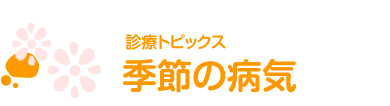

季節でおこりやすい病気早見表
| 1月 | 2月 | 3月 | 4月 | 5月 | 6月 | 7月 | 8月 | 9月 | 10月 | 11月 | 12月 | |
| はしか | ||||||||||||
| 乳児嘔吐下痢症 | ||||||||||||
| インフルエンザ | ||||||||||||
| 風疹 | ||||||||||||
| 水ぼうそう | ||||||||||||
| ヘルパンギーナ | ||||||||||||
| 手足口病 | ||||||||||||
| プール熱 |
季節の変わり目、新生活が始まり生活環境が大きく変わりやすい季節で、体調も崩しやすく、いろいろな感染症も心配な季節です。
溶連菌感染症
冬から初夏にかけて比較的起こりやすい病気です。潜伏期間は2～5日で、その後、のどの痛み・発熱といった風邪に似た症状がでます。舌が真っ赤になるのが特徴です。抗生物質をきちんと飲み切ることが大切です。ほとんどの場合は薬を飲んで1日～2日で熱がさがり、症状が緩和します。
麻疹（はしか）、風しん、水ぼうそうなど
溶連菌感染症同様冬から初夏にかけて起こりやすい病気です。どの病気にも効果的な予防接種があります。集団生活が始まる前に予防接種を受けておきましょう。
食中毒
意外にも夏よりも季節の変わり目の春や秋に多く発生します。気温が安定し、夏ほど気をつけなくなるのも原因のひとつです。
代表的な病気として「夏風邪」があります。そのほか、冷たいものを食べ過ぎておなかをこわしたり、春同様食中毒にも注意が必要です。
夏風邪（手足口病、ヘルパンギーナ、プール熱（咽頭結膜熱））
いわゆる「夏風邪」です。発熱や口内炎、発疹や水ぶくれなどが特徴の症状で、冬の風邪と違い、咳やくしゃみといった症状があまりありません。直接効果のある薬がないので、各症状を和らげる薬を使い安静にします。
感染経路はくしゃみや咳による飛まつ感染と、目やにや便などによる接触感染が多いようです。ほかの人と同じタオルなどを使わないなどの予防が大切です。
冷房病（クーラー病）
冷房が効いた屋内から、気温の高い室外との寒暖差からおきる体調不良の俗称です。温度調節で外気温との差を小さくしましょう。またフィルターのお手入れ不足などでおきるアレルギー症にも注意が必要です。
風邪とインフルエンザに特に注意が必要です。どちらも低気温と乾燥を好むので、冬には毎年のように流行しています。
ロタウイルス性下痢症（乳幼児嘔吐下痢症）
2～3日の潜伏期間の後、発熱に加え、激しい下痢と嘔吐が起こります。直接利く薬がないので、各症状を和らげる薬で経過をみます。注意点としては脱水症状が起こりやすいので、水分補給を欠かさないようにしましょう。
症状は発熱だけ、下痢だけといった単体でも起こります。熱は1日でおさまることが多いようですが、下痢が1週間前後続きます。
インフルエンザ
1日～2日の潜伏期間の後、寒け、高熱、頭痛、関節や筋肉痛、だるさなどの症状が突然現れます。激しい咳を伴うことも多く、熱も40℃近くまであがることもあります。感染力がとても強く、毎年大流行しています。
また、気管支炎や肺炎、中耳炎などの合併症にも注意が必要ですが、予防接種をうけることで重症化を防げることが多いので、流行するまでにワクチンを接種しておきましょう。
RSウイルス感染症
感染力が非常に強く、ほぼ100％の子どもが、２歳までに１度はRSウィルスに感染すると言われています。4～5日の潜伏期間のあと、38℃～39℃の発熱や鼻水、せきなどの風邪と同じ症状が出ます。
生後間もない赤ちゃんなど、小さな子ほど重症化しやすく、肺炎や細気管支炎を引き起こすとても怖い病気です。
そのほか季節性の疾患に対応
上記の病気はほんの一例です。この他にも、年齢や性別によってもさまざまな症状の病気があるので、お子様の様子や状態に異変を感じたときは、早めに受診をしましょう。

謝花医院 (小児科,内科) 尼崎市の小児科・内科 各種予防接種実施
- 予約診療専用回線
- 06-6481-7178
- 通常お問い合わせ
- 06-6481-7177
水・土 9:00～13:00
休診日 土曜水曜午後 日曜祝日
診療受付・お電話でのお問い合わせは診療日の9:00～12:30、17:00～19:30にお願いいたします。